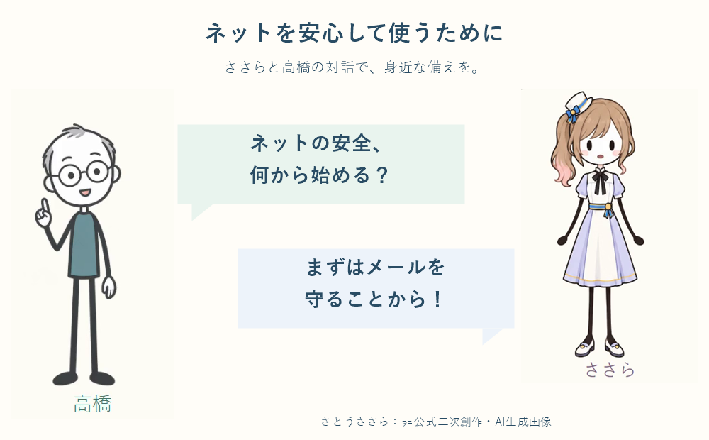

2026-11-10 第３回準備幹事会（オンライン）
■ 開催日時
11/10 (火) 20:00 ～ 21:00
■ 接続情報
・ Zoom の接続情報は、参加者宛ての案内メールをご確認ください。
■ 幹事会参加登録
【伝助】第３回準備幹事会（オンライン）日時調整
https://densuke.biz/list?cd=VHwznPEev3mSyKUc
参加予定者９名（伝助掲載順）： 坂口、唐﨑、大尾、川本雄、国原、森、草野、大利、高橋
（佐々木さんは先約のため欠席）
■ 同期会出欠連絡
30.5 名が参加予定（○30・△1・×9）。
【伝助】11/28 (土) 同期会の出欠連絡
https://densuke.biz/list?cd=XJev3HKy7peYvr5F
■ 議題
(1) 基調コンセプト
・ 「倫理とAI」の考察を背景に保ちつつ、2026/11/8の相談で、冒頭15分以内は
身近なネット安全対策をささらとの対話で紹介し、対策ページへ誘導する方針に更新。
・ 「倫理とAI」考察メモ
・ ネットを安心して使うために（安全対策ページ）
(2) 進行方法（ささら AI）
・ 最低限の方式として、事前に用意した音声をウェブページのボタンで再生する方式を検討。
・ 会場デスクトップPCへの追加インストールなしで使えることを必須条件とする。
・ ささらキャラクターの画像・音声の利用条件（CeVIOキャラクターライセンス等）を確認中。
公開リポジトリへの画像掲載・公開は保留。
(3) スピーチ順
・ 参加者一覧が固まり次第、あらかじめ順番を決める（今回は方針確認まで）。
ウェブページ
https://shudo25.github.io/homepage/events/20261128/index.html
■ 関連リンク
・ 修道２５回 同期会・イベント情報
・ 気楽に集まる会トップページ
・ YouTube プレイリスト
|
 |